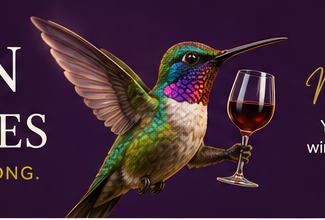
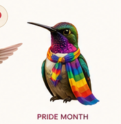
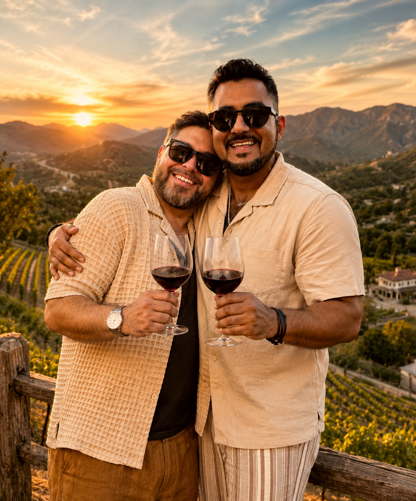
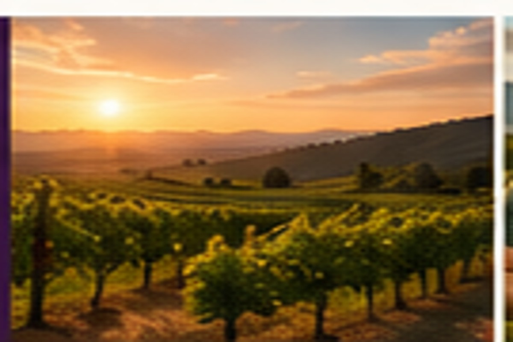
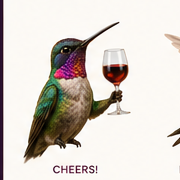
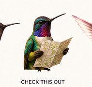
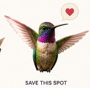
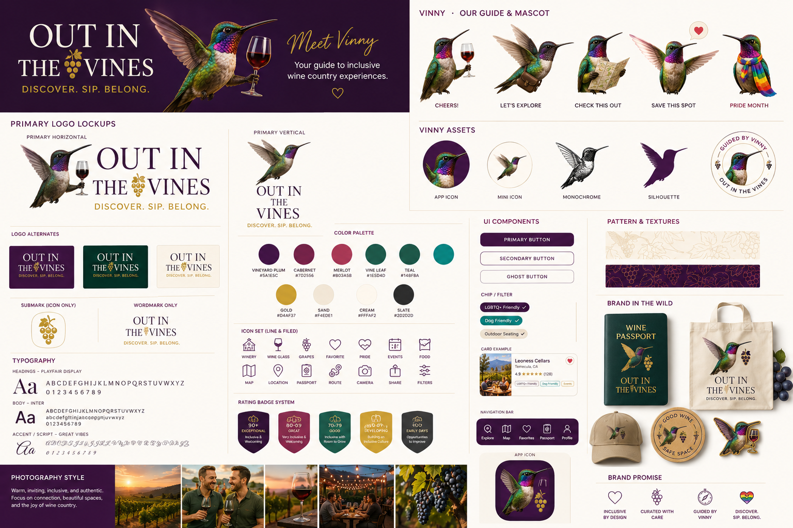
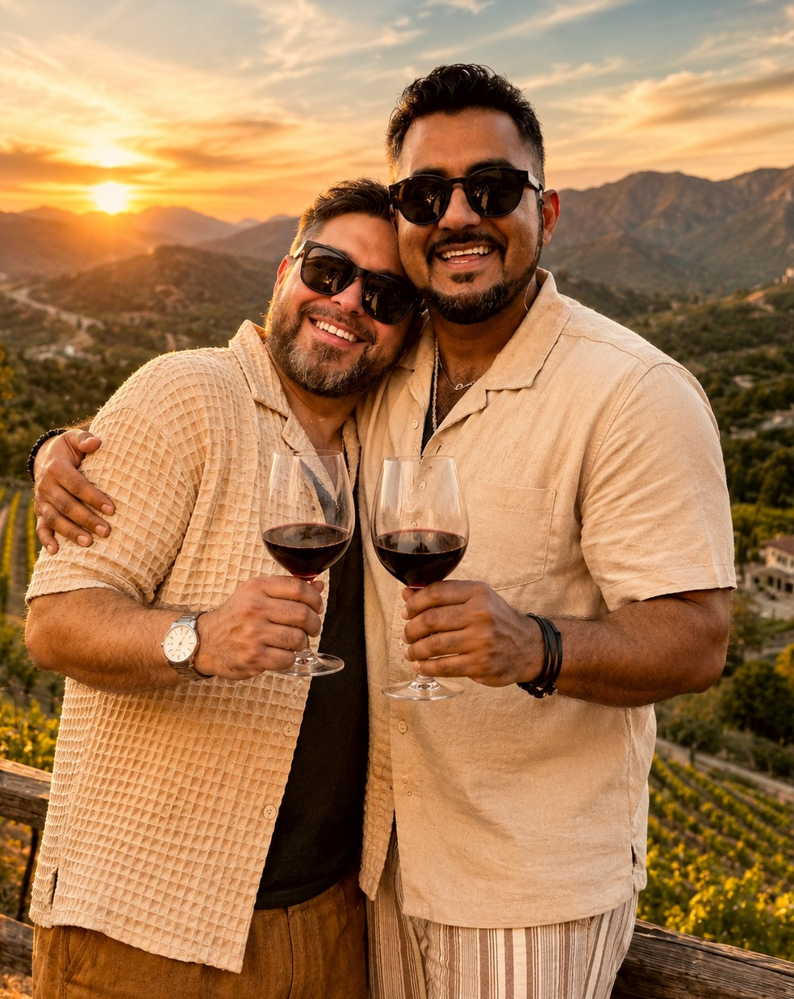

Welcome, researchedTransparent methodology, never pay-to-play rankings.

Hey there,
I’m Vinny!
Your guide to wine country where you belong.
TEMECULA, CALIFORNIA
Find your kind of
wine country.
Inclusive insights, honest local recommendations, and really good wine.
Wine, personally tastedDistinct recommendations from Andrew and Antonio.
Guided by VinnyFast, friendly answers built for the moment.
START WITH THE VIBE
What kind of wine day are we having?
TWO HUSBANDS. TWO PALATES.
Andrew & Antonio’s picks
Your favorite Leoness wine
Ready for your real tasting note, vintage, and “who will love this” recommendation.
Antonio’s favorite Akash wine
Ready for Antonio’s own voice, rating, and ideal moment to order it.

VINNY VERIFIED™Highly WelcomingWELCOME INDEX™THE WELCOME INDEX™
Hospitality is not a footnote.
It is the reason many travelers choose one winery over another. The Welcome Index™ turns hospitality, guest comfort, conflict resolution, public actions, and lived experience into a transparent editorial report.
Vinny Verified™ is the recognition wineries can earn when the evidence supports consistently exceptional hospitality.

MEET YOUR LOCAL GUIDES
Andrew & Antonio
Two husbands, two palates, and one shared belief: wine country should feel welcoming before you ever step through the door.
Andrew brings the deep Temecula knowledge, editorial perspective, and unapologetically strong opinions. Antonio brings his own palate, cultural perspective, and the extremely important ability to say, “No, order this one instead.”
🍷 Real recommendations
🌈 Queer perspective
📍 Temecula locals
WHY OUT IN THE VINES EXISTS
Less guessing.
More belonging.
We love wine country. We also know what it feels like to wonder whether you will be welcomed before you walk through the door.
Out in the Vines is designed first for LGBTQ+ wine travelers, while remaining useful, elegant, and inviting for anyone who values exceptional hospitality.
COMING INTO VIEW
The future travel companion
Vinny Nearby
Open now, close by, and right for the moment.
Wine Passport
Track wineries visited and unlock regional milestones.
Events
Music, dinners, drag brunches, tastings, and more.


WINERY SPOTLIGHTLeoness Cellars
WINERY SPOTLIGHT
One of Temecula’s best places to slow down.
Leoness is the kind of winery that rewards an unhurried afternoon: estate wines, vineyard views, and a meal worth planning around.
“We’ve returned enough times to know the magic isn’t one single thing. It’s the way the wine, the view, and the pace all work together.”
Andrew & AntonioPersonal experience note · Prototype copy
CURRENTLY POURING
What’s in our glasses
Personal, current, and intentionally selective.
🍷
ANDREW
Leoness Cabernet Franc
“Still my benchmark red for a slow Temecula afternoon.”
Placeholder tasting note🥂
ANTONIO
Akash Rosé
“Bright, easy, and exactly what I want when friends visit.”
Placeholder tasting noteNEW & NOTEWORTHY
Right now in wine country
Live music this weekend
See which wineries are programming music, dinners, and evening events.
Three wineries. One excellent day.
Build a realistic itinerary without turning wine tasting into a race.
Hospitality, made transparent
See how the Welcome Index™ and Vinny Verified™ recognition work.
VINNY’S SHORTLIST
Five very different wine days
VINNY’S QUICK MATCH
Tell me the vibe.
I’ll handle the wineries.
Choose what matters most today. Vinny will rank your best matches.
1
What are we drinking?
2
What’s the mood?
3
What matters today?
TEMECULA WINE COUNTRY
Explore wineries
Five prototype profiles. Real winery characteristics, demo editorial ratings.
MOCK MAP VIEW
Wine country at a glance
This visual map demonstrates the future interaction. Pins are approximate, not navigational.
RANCHO CALIFORNIA RD
DE PORTOLA RD
🐦 Vinny says: Keep your day to three stops. Wine country is not a scavenger hunt.
ANDREW & ANTONIO
We drank through Temecula
so you don’t have to.
Actually, we’ll probably keep doing it anyway.
These personal wine selections are placeholders awaiting Andrew and Antonio’s real picks. The prototype demonstrates how each recommendation will look.
SAVED FOR LATER
Your favorites
The browser remembers these on this device.
YOUR WINE DAY
Keep it cute. Keep it to three.
Add wineries from any profile. Vinny will protect you from overplanning.
OUR MOST IMPORTANT FEATURE
The Vinny Welcome Rating
A transparent, evolving editorial assessment designed to help LGBTQ+ travelers make more confident choices.
01
Firsthand experience
Visits and direct hospitality experiences from Andrew and Antonio carry significant weight.
02
Hospitality preparedness
Conflict resolution, harassment prevention, and inclusion training may support the assessment when verified.
03
Public actions
Documented community engagement, leadership actions, endorsements, or political giving may be considered with context and reliable sourcing.
04
Guest experience
Credible, specific reports can reveal whether welcoming practices are consistent across visits.
05
Right to respond
Wineries should have a clear process to correct outdated facts, supply context, and describe improvements.
06
Confidence matters
A score will be paired with low, medium, or high confidence so limited evidence is never mistaken for a definitive conclusion.
THE RECOGNITION
Vinny Verified™
A visible recognition for wineries that meet the Welcome Index™ threshold with sufficient evidence and confidence.
Website badgeTasting-room decalPrinted certificateSocial graphic
VINNY VERIFIED™Highly WelcomingWELCOME INDEX™ · OUT IN THE VINES
VINNY VERIFIED™Highly Welcoming
FORMAL REVIEW FRAMEWORK
How a review becomes publishable
Open a review file
Create a unique winery record, assign a reviewer, establish the review period, and log every source.
Collect evidence
Document firsthand visits, hospitality interactions, training confirmation, public actions, guest reports, and winery responses.
Score dimensions
Score each defined category using anchored criteria rather than instinct alone.
Apply confidence
Low, medium, or high confidence reflects the quantity, recency, independence, and consistency of evidence.
Editorial review
A second reviewer checks evidence quality, tone, calculation, unsupported claims, and conflicts of interest.
Notify and publish
Give the winery a factual-correction window, publish the report, and set the next review date.
Proposed weighted dimensions
Firsthand LGBTQ+ guest experience30%
Comfort, respect, consistency, and how identity-related moments are handled.
Hospitality and staff conduct20%
Warmth, professionalism, service recovery, and consistent treatment across guests.
Conflict-resolution readiness15%
Documented escalation pathways, management response, and applicable training.
Inclusive practices and representation15%
Policies, language, marketing, facilities, partnerships, and visible signals.
Community engagement10%
Meaningful, sustained participation rather than one-off performative gestures.
Public leadership actions10%
Relevant verified endorsements, donations, statements, or actions reviewed with context.
Documentation rules
- Every material claim receives a source, date, evidence type, and reviewer note.
- Political activity can inform no more than 10% of the total assessment and can never determine the rating alone.
- Anonymous guest reports require corroboration before affecting a public designation.
- Personal experience is labeled as such and separated from verified public facts.
- Old evidence decays in weight unless it reflects unresolved conduct or an ongoing policy.
- Wineries can submit corrections, context, training records, ownership changes, and requests for re-review.
VINNY NEARBY · PROTOTYPE MODE
You’re in wine country.
What sounds good now?
This mock mode demonstrates the future GPS experience using sample distances and current prototype data.

Vinny says:
Three stops is a lovely wine day. Seven is a cry for help.
MEET YOUR WINE-COUNTRY GUIDE
Vinny has excellent taste.
And yes, the throat feathers are naturally this fabulous.
WHY A HUMMINGBIRD?
Small bird. Big personality.
Hummingbirds are curious, energetic, adaptable, and drawn to beautiful places. Vinny brings those same qualities to wine travel.
His subtle iridescent rainbow is a nod to the LGBTQ+ community without turning the brand into a wall of rainbow graphics. He is the welcoming guide who helps everyone find the right place for the day they want to have.
“Trust me on the Cab Franc.”
“Hydrate. Seriously.”
“Wine tastes better when you feel like you belong.”
FUTURE FEATURE PREVIEW
Your Temecula Wine Passport
A playful record of where you have been, what you tasted, and what Vinny thinks you should try next.
TEMECULA PROGRESS
2 of 5 prototype wineries

EVENT DISCOVERY PREVIEW
What’s happening in wine country?
Sample cards demonstrate how the future site will organize live music, dinners, celebrations, and LGBTQ+ events.
Sunset Sessions
Akash Winery · Saturday · 5:00 PM
Prototype event onlyEstate Pairing Evening
Leoness Cellars · Friday · 6:30 PM
Prototype event onlyOut in the Vines Social
Temecula Wine Country · Date TBA
Concept eventOFFICIAL IDENTITY SYSTEM
The Out in the Vines Brand Kit
Vinny, Andrew, Antonio, the complete color system, and the visual language designed to make inclusive wine travel feel unforgettable.


THE PEOPLE BEHIND THE BIRD
Andrew & Antonio
Out in the Vines is built from firsthand experience, shared adventures, and two different palates. Vinny may be the guide, but Andrew and Antonio are the human heart of the brand.